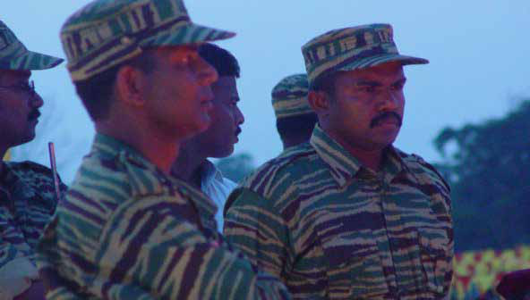
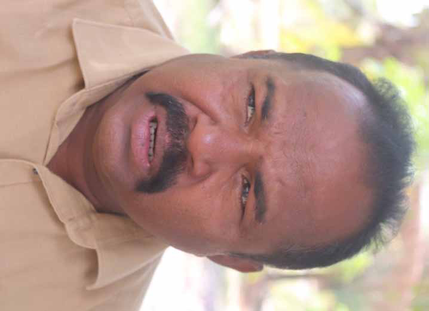
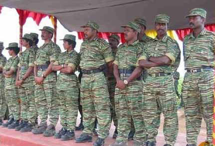
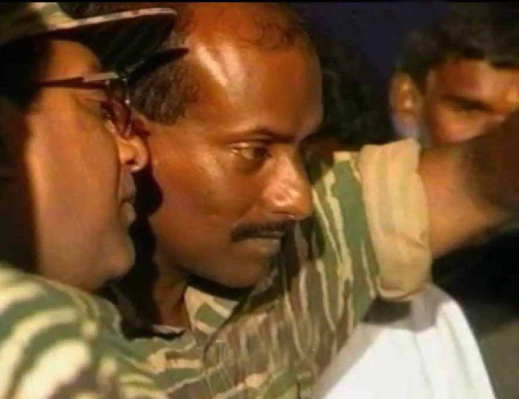
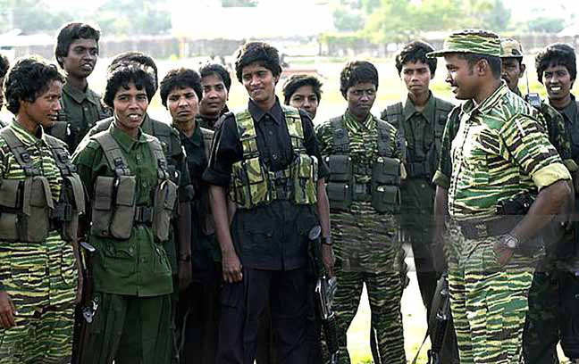

<!DOCTYPE html>
<html lang="en">
  <head>
    <meta charset="UTF-8">
    <meta name="viewport" content="width=device-width, initial-scale=1.0">
    <link rel="preconnect" href="https://fonts.gstatic.com/" crossorigin="" />
    <link
      rel="stylesheet"
      href="https://fonts.googleapis.com/css2?display=swap&amp;family=Newsreader%3Awght%40400%3B500%3B700%3B800&amp;family=Noto+Sans%3Awght%40400%3B500%3B700%3B900"
    />

    <title>Who is the Trait or?</title>
    <link rel="icon" type="image/x-icon" href="data:image/x-icon;base64," />

    <script src="https://cdn.tailwindcss.com?plugins=forms,container-queries"></script>
    <link rel="stylesheet" href="../assets/styles.css">
    <style>
        .prose img {
            max-width: 100%;
            height: auto;
            border-radius: 8px;
            margin: 2rem 0;
        }
        .prose h1, .prose h2, .prose h3 {
            color: #1c170d;
            margin-top: 2rem;
            margin-bottom: 1rem;
        }
        .prose p {
            margin-bottom: 1.5rem;
            line-height: 1.7;
        }
    </style>
  </head>
  <body class="bg-[#fcfbf8] font-['Newsreader','Noto_Sans',sans-serif]">
    <!-- Header -->
    <header class="bg-white shadow-sm border-b border-[#f3f0e7] sticky top-0 z-50">
        <div class="max-w-7xl mx-auto px-4 sm:px-6 lg:px-8">
            <div class="flex justify-between items-center py-4">
                <div class="flex items-center space-x-4">
                    <a href="../index.html" class="flex items-center space-x-4 hover:opacity-80 transition-opacity">
                        <div class="w-12 h-12 bg-[#9b844b] rounded-full flex items-center justify-center">
                            <span class="text-white font-bold text-xl">JM</span>
                        </div>
                        <div>
                            <h1 class="text-2xl font-bold text-[#1c170d]">Jaffna Monitor</h1>
                            <p class="text-sm text-[#9b844b]">News & Publications</p>
                        </div>
                    </a>
                </div>
                <nav class="hidden md:flex space-x-8">
                    <a href="../index.html" class="text-[#1c170d] hover:text-[#9b844b] transition-colors">Home</a>
                    <a href="#" class="text-[#1c170d] hover:text-[#9b844b] transition-colors">News</a>
                    <a href="#" class="text-[#1c170d] hover:text-[#9b844b] transition-colors">About</a>
                    <a href="#" class="text-[#1c170d] hover:text-[#9b844b] transition-colors">Contact</a>
                </nav>
            </div>
        </div>
    </header>

    <!-- Breadcrumb -->
    <div class="bg-white border-b border-[#f3f0e7]">
        <div class="max-w-4xl mx-auto px-4 sm:px-6 lg:px-8 py-3">
            <nav class="flex" aria-label="Breadcrumb">
                <ol class="flex items-center space-x-2">
                    <li>
                        <a href="../index.html" class="text-[#9b844b] hover:text-[#1c170d] transition-colors text-sm">
                            Home
                        </a>
                    </li>
                    <li>
                        <svg class="w-4 h-4 text-gray-400" fill="currentColor" viewBox="0 0 20 20">
                            <path fill-rule="evenodd" d="M7.293 14.707a1 1 0 010-1.414L10.586 10 7.293 6.707a1 1 0 011.414-1.414l4 4a1 1 0 010 1.414l-4 4a1 1 0 01-1.414 0z" clip-rule="evenodd"></path>
                        </svg>
                    </li>
                    <li>
                        <span class="text-gray-500 text-sm">Who is the Trait or?</span>
                    </li>
                </ol>
            </nav>
        </div>
    </div>

    <!-- Main Content -->
    <main class="max-w-4xl mx-auto px-4 sm:px-6 lg:px-8 py-8">
        <article class="bg-white rounded-lg shadow-lg overflow-hidden">
            <!-- Article Header -->
            <div class="p-8 border-b border-[#f3f0e7]">
                <h1 class="text-3xl md:text-4xl font-bold text-[#1c170d] mb-4 leading-tight">Who is the Trait or?</h1>
                <div class="flex items-center text-[#9b844b] text-sm mb-4">
                    <span>By Jaffna Monitor</span>
                    <span class="mx-2">•</span>
                    <span>Published Unknown</span>
                </div>
                <div class="flex items-center space-x-4">
                    <div class="flex items-center space-x-2">
                        <svg class="w-4 h-4 text-[#9b844b]" fill="currentColor" viewBox="0 0 20 20">
                            <path fill-rule="evenodd" d="M10 18a8 8 0 100-16 8 8 0 000 16zm1-12a1 1 0 10-2 0v4a1 1 0 00.293.707l2.828 2.829a1 1 0 101.415-1.415L11 9.586V6z" clip-rule="evenodd"></path>
                        </svg>
                        <span class="text-sm text-[#9b844b]">5 min read</span>
                    </div>
                </div>
            </div>

            <!-- Article Content -->
            <div class="p-8">
                <div class="prose prose-lg max-w-none">
                    <h1>Who is the Trait or?</h1>
<p>Jaffna Monitor
hellojaffnamonitor@gmail.com
16
Interview
BY: 
Kaniyan Pungundran<br />
fzpad; G+q;Fd;wd;
Who 
is the 
Trait or?
Exclusive 
Interview with 
Karuna Amman
Part-2
What occurred following the Jeyanthan 
Regiment's successful thwarting of Operation 
Jayasikurui under your command?
The local populations of Mullaitivu and Kilinochchi 
began to regard me with great admiration and respect. 
Everywhere I went, people showed much love and respect, 
affectionately calling me 'Karuna Amman.' I became well-
known throughout the region. I received the affection of the 
elders, who treated me as if I were their own child, while 
the younger generation looked up to me as an elder brother. 
Even children expressed their fondness openly. I must say 
that, after leaving the LTTE, many sympathizers accused me 
of playing the regional card. But I need to make it clear that I 
really hated regional divisions; for me, east and north are the 
same. All the Tamil-speaking places in Sri Lanka that joined</p>
<p></p>
<p>Jaffna Monitor
hellojaffnamonitor@gmail.com
17
hands to fight against the Sinhala chauvinistic 
government are the same for me. I can't forget 
the general public from the Vanni-North region 
that showed me so much love and affection. I 
will never forget that.
However, this growing popularity did not sit 
well with other commanders of the Liberation 
Tigers of Tamil Eelam (LTTE), notably 
Pottu Amman. Concerned about my rising 
influence, they began to cast aspersions on me 
to Prabhakaran. Prabhakaran, known for his 
inherent suspicion and likely still influenced 
by past incidents such as Mathaya's issue, I 
believe, had been swayed by these negative, 
systematic portrayals and ill talks. Additionally, 
he was not fully aware of the power games that 
other commanders played. He might have also 
wondered why other LTTE commanders were 
plotting against me. Therefore, he must have 
given some credence to their stories.
After achieving a pivotal victory in the 
Jayasikurui battle, the LTTE began strategizing 
for their next major military objective: 
the potential capture of Jaffna. I advised 
Prabhakaran against an immediate attempt to 
capture Jaffna, citing the substantial presence 
of approximately 40,000 Sri Lankan troops in 
the region. I expressed my concern that such an 
action could lead to significant complications, 
including 
the 
potential 
intervention 
of 
international forces, notably from India, 
in support of the Sri Lankan army. As an 
alternative, I proposed a tactical redirection 
towards Anuradhapura. 
My strategy was based on the belief that an 
LTTE offensive towards the revered city of the 
sacred Bodhi tree would compel the Sri Lankan 
military to redirect their forces from various 
parts of the country to defend Anuradhapura. I 
argued that this would reduce military presence 
in Jaffna, as there were no mass military 
deployments in other parts of the country. The 
military would need to draw forces from Jaffna 
to safeguard their revered city. I presented this 
strategic recommendation to Prabhakaran for 
his consideration.</p>
<p></p>
<p>Jaffna Monitor
hellojaffnamonitor@gmail.com
18
Was it within the 
capabilities of the Tigers 
to capture Anuradhapura, 
given its significance as 
a central hub of Sinhala 
Buddhism?
Absolutely, it is a feasible 
objective. The prowess of our 
Jayanthan Regiment should not 
be underestimated. Had they 
been given the opportunity to 
engage in battle, they certainly 
could 
have 
achieved 
this. 
It is important to recall the 
remarkable 
accomplishments 
of 
our 
regiment: 
they 
successfully 
overtook 
the 
formidable 
Pooneryn 
army 
camp and emerged victorious 
in the seemingly impenetrable 
Jayasikurui battle. Given these 
precedents, there is no reason 
to doubt their ability to launch 
an offensive from Vavuniya 
and 
successfully 
capture 
Anuradhapura.
Why, then, did the LTTE 
not proceed with the plan 
you proposed?
In both logical and military 
terms, that plan was absolutely 
superb. But you know, it wasn't 
Prabhakaran but other leaders 
of the LTTE who were so 
clear that I should not get the 
credit. Having already won the 
Jayasikurui battle, they might 
have thought I would be regarded as the greatest of all time 
if I won another battle for the LTTE. They didn't want that to 
happen.
Then what happened..?
I presented the strategy to Prabhakaran. However, key figures 
within the LTTE, such as Tamilenthi, the head of the finance 
wing, and Pottu Amman, the head of the intelligence wing, 
argued and plotted against this plan. They brainwashed 
Prabhakaran, claiming that this plan would ultimately fail. They</p>
<p></p>
<p>Jaffna Monitor
hellojaffnamonitor@gmail.com
19
posited that capturing Jaffna was crucial for the 
LTTE's economic fortification, suggesting that 
this action would lead to increased financial 
support from the Tamil diaspora living abroad.
Prabhakaran must have found some merit 
in their arguments and decided against 
implementing my strategy. They planned the 
Jaffna operation without my knowledge, under 
the assumption that I was unaware of their 
intentions. However, through reliable sources, 
I became aware of their plans to execute this 
operation while deliberately excluding me 
from the process. Subsequently, Prabhakaran 
instructed me to relocate my regiment to Manal 
Aru and focus on training activities there. This 
directive effectively sidelined me from the main 
theatre of operations.
Interestingly, even during this period, I was the 
Chief Commander of all infantry battalions 
within the LTTE. Despite this significant role, 
I was neither informed nor consulted when the 
LTTE launched an attack on Elephant Pass and 
formulated a strategy to capture Jaffna.
This 
decision 
to 
proceed 
without 
my 
involvement led to a sense of uncertainty and 
confusion within various divisions of the LTTE. 
Many members questioned the appropriateness 
of excluding me, especially considering my 
significant contribution to the victory in the 
Jayasikkuru attack. This situation prompted 
concerns among the ranks about the direction 
and leadership of the LTTE.
A few commanders and members of the LTTE 
reached out to me, seeking clarity on the 
unfolding events. Few Others approached the 
leadership for explanations. In response, the 
leadership misleadingly communicated that my 
unit was preparing for a major offensive in the 
East under my command. Several individuals 
directly expressed to me their apprehensions 
about being marginalized in the planning 
process of this significant military endeavour.
The initiation of the battle at Elephant Pass, 
conducted without my prior knowledge, marked 
a turning point. It was from this moment that 
Karuna Amman 
with Jimkali 
Thatha, 
Standing to His 
Right Side</p>
<p></p>
<p></p>
<p>Jaffna Monitor
hellojaffnamonitor@gmail.com
20
the underlying tensions and disagreements 
between me and other commanders within 
the LTTE became more pronounced and 
observable. 
The LTTE deployed a multifaceted approach 
for the Elephant Pass camp offensive: A team 
under the command of Balraj arrived via sea 
from Vettilaikeni, while another contingent 
led by Theepan advanced from the north. 
The ensuing conflict was intense, lasting 
twenty-seven days and resulting in the loss of 
approximately one thousand eight hundred 
LTTE members. Despite their efforts, the 
LTTE forces were unable to make significant 
progress, and many of the fallen fighters' bodies 
remained unrecovered. Faced with a stagnant 
situation and mounting pressure, the LTTE 
leadership found themselves in a challenging 
predicament.
During this critical juncture, none of the 
commanders who had previously orchestrated 
plans against me and ensured my exclusion 
from the battle were able to alleviate the 
difficulties faced by the LTTE forces. It was at 
this point that Prabhakaran reached out to me, 
requesting my involvement in the battlefield 
with my Jeyanthan regiment. He expressed that 
only a little more effort was needed to capture 
the camp and asserted that if my team and I 
joined the battle now, we would secure victory.
Internally, I had anticipated this turn of events; 
the scenario of them initiating an attack without 
my input and then seeking my assistance in 
a challenging situation was a pattern I had 
recognized. 
It is truly remarkable and almost beyond belief 
that our team, comprised of only 350 fighters, 
fought fiercely and with excellent military 
acumen to capture Elephant Pass. Considering 
the small number of individuals involved, this 
astounding military feat stands as a profound 
testament to the exceptional capabilities and 
unwavering resolve of our Jeyanthan brigade.
How was that possible? 
My fighters and I went to the battle site, where 
I conducted on-site reconnaissance using 
binoculars. From my vantage point, I identified 
approximately seven distinct military positions 
of the Army. A key observation was the Army's 
supply line, maintained through the Kilaly 
coast. Throughout the twenty-seven days of 
intense combat, the Tigers failed to disrupt this 
crucial supply route. In my view, this represents 
a significant strategic failure, as disrupting the 
supply line could have been pivotal.
Another tactical aspect that came to my attention 
was the pattern of engagement between the 
Tigers and the Army, predominantly nocturnal 
in nature. Typically, the Tigers would initiate 
an offensive during the night, which was then 
followed by a counterattack from the Army. 
Daytime, in contrast, saw a marked decrease 
in activity from both sides. Army personnel 
exhibited reduced alertness during the day, 
with a significant lull in their vigilance after 
lunch, often appearing to be sleeping.
During this period, we were equipped with 
Russian artillery, a sophisticated weapon 
system that many within our ranks were not 
fully proficient in operating. However, we had 
the expertise of Raayu Annan, a highly skilled 
and adept fighter who had been part of my 
third training batch in India. He was tasked 
with overseeing the artillery operations. Raayu 
Annan was not only technically proficient but 
also a sensitive individual who, regrettably, 
passed away from cancer after my departure 
from the Liberation Tigers organization.</p>
<p>Jaffna Monitor
hellojaffnamonitor@gmail.com
21
The Russian artillery at our disposal, capable 
of striking targets up to a distance of seven 
kilometres, offered a level of precision and 
power comparable to tank fire. Recognizing 
this strategic advantage, I approached Raayu 
Annan with specific operational instructions. 
I directed him to use the artillery to target 
the seven critical Army positions that I had 
identified earlier. He readily agreed to the plan.
A strategic plan was formulated. Our position 
was separated from the Elephant pass camp by a 
pond, with a stretch of shrubland lying between 
the pond's bank and the army positions. This 
terrain offered a clear view of the enemy when 
surveyed from above the shrubland, providing 
a tactical advantage for our forces.
We devised a covert operation; approximately 
60 members of the Jayanthan Regiment, 
under the command of Jimkali Thatha, were 
to infiltrate the shrubland under the cover of 
night and remain concealed until the following 
noon. The nighttime movement through this 
terrain was akin to a suicidal mission, where 
any minor error could jeopardize the entire 
operation. 
Jimkali Thatha, a very brave commander of 
the Jeyanthan brigade, led those fighters into 
the shrubland. He was an excellent fighter and 
leader. After I left the LTTE, he was tortured 
and burned to death by the Vanni LTTE, on 
the orders of Prabhakaran and Pottu Amman, 
near the Verugal River. This act was one of 
the greatest acts of betrayal and treachery one 
could imagine. 
Colonel Rayu alongside Prabhakaran</p>
<p></p>
<p>Jaffna Monitor
hellojaffnamonitor@gmail.com
22
During this period, I had a meeting with 
Prabhakaran. He underscored the importance 
of victory, stating, "Somehow win this attack. 
Otherwise, the movement will be completely 
destroyed." 
As Prabhakaran's words resonated in our 
thoughts, we resolved to initiate the offensive at 
2 PM, when the Army typically pauses for their 
midday meal and rest. The assault commenced 
exactly at the designated hour, with a signal to 
the artillery unit to begin their barrage. The 122 
mm artillery thundered into action, launching 
shells towards all the pinpointed military 
locations. Raayu Annan had arranged two 
artillery machines for this operation, aiming at 
seven military targets. Raayu Anna assured us 
that his team would neutralize these points in 
15 minutes. Remarkably, he achieved this in a 
mere seven minutes. Subsequently, the group 
of 60 Tigers, under the leadership of Jimkali 
Thatha, who had been lying in wait among the 
undergrowth, stormed into the Elephant Pass 
camp. Notably, during this bold strike, none 
of the members from Jimkali Thatha's unit 
sustained serious injuries.
Concurrently with the primary assault on the 
Elephant Pass camp, a separate unit of the 
Tigers advanced towards Veththilaikkēṉi. At 
the same time, another team encircled the 
Elephant Pass camp, successfully reaching the 
Iyakkachchi junction by 5 PM that day. Despite 
these advances, the military's supply line from 
Kilaly remained active and unimpeded.
As night fell over the battlefield, we deployed 
a select group of 12 Tigers along the Kilaly 
route in a strategic move. Their objective was 
not to combat or cut off the supply line but 
rather to implement a ruse. The team's orders 
were to sporadically target the military's supply 
vehicles. This deliberate strategy was crafted 
to instigate uncertainty and dread within the 
military forces, leading them to suspect a major 
infiltration and potential compromise of their 
crucial supply route by the Tigers.
This tactic was primarily psychological, aimed 
Karuna Amman Alongside His Female Fighters from the East</p>
<p></p>
<p>Jaffna Monitor
hellojaffnamonitor@gmail.com
23
at creating an impression of a substantial 
Tiger force and a looming threat along the 
supply line. The mere existence and actions 
of these 12 Tigers were designed to convey 
the sense of a significant disruption in the 
military's logistics, fostering a climate of 
fear. 
Shortly, our walkie-talkie crackled to life 
with activity. Fighters from the Jayanthan 
Regiment exclaimed in surprise, "Amman, 
Amman, there's a huge black object here; 
we can't identify it." Their voices mixed 
excitement with a hint of fear. I cautioned 
them not to approach and promptly 
dispatched an expert team to inspect 
the mysterious object. It turned out to 
be a formidable 155 mm artillery gun, 
abandoned by the Army as they retreated 
from the Elephant Pass camp, fleeing with 
their backs turned. 
The capture of this artillery, the largest 
of its kind acquired by the movement, 
signified a momentous occasion. The 
leader, Prabhakaran, visibly pleased, could 
not conceal his satisfaction, his laughter 
echoing our triumph. We, too, were elated, 
knowing our courage and efforts had 
brought joy to our revered leader. 
Until then, my involvement in the battle 
had been shrouded in secrecy. However, 
somehow, the Army had deduced that I 
was actively present on the battlefield at 
Elephant Pass. That revelation is a tale in 
itself, a lengthy and intricate one.
He settled down, sitting cross-legged, 
ready to share the rest of his stories.
To be continued.....</p>
<p></p>
                </div>
            </div>

            <!-- Article Footer -->
            <div class="p-8 border-t border-[#f3f0e7] bg-gray-50">
                <div class="flex flex-wrap items-center justify-between">
                    <div class="mb-4 md:mb-0">
                        <h4 class="text-sm font-semibold text-[#1c170d] mb-2">Tags:</h4>
                        <div class="flex flex-wrap gap-2">
                            <span class="tag">ltte</span><span class="tag">their</span><span class="tag">military</span><span class="tag">jaffna</span><span class="tag">prabhakaran</span>
                        </div>
                    </div>
                    <div class="flex space-x-4">
                        <a href="../index.html" 
                           class="inline-flex items-center px-4 py-2 bg-[#9b844b] text-white rounded-lg hover:bg-[#1c170d] transition-colors text-sm font-medium">
                            <svg class="w-4 h-4 mr-2" fill="none" stroke="currentColor" viewBox="0 0 24 24">
                                <path stroke-linecap="round" stroke-linejoin="round" stroke-width="2" d="M10 19l-7-7m0 0l7-7m-7 7h18"></path>
                            </svg>
                            Back to Home
                        </a>
                    </div>
                </div>
            </div>
        </article>
    </main>

    <!-- Footer -->
    <footer class="bg-[#1c170d] text-white py-12 mt-16">
        <div class="max-w-7xl mx-auto px-4 sm:px-6 lg:px-8">
            <div class="grid grid-cols-1 md:grid-cols-3 gap-8">
                <div>
                    <h3 class="text-xl font-bold mb-4">Jaffna Monitor</h3>
                    <p class="text-gray-300">
                        Dedicated to bringing you the latest news and insights from Jaffna and beyond.
                    </p>
                </div>
                <div>
                    <h4 class="text-lg font-semibold mb-4">Contact</h4>
                    <p class="text-gray-300">hellojaffnamonitor@gmail.com</p>
                    <p class="text-gray-300">Jaffna, Sri Lanka</p>
                </div>
                <div>
                    <h4 class="text-lg font-semibold mb-4">Follow Us</h4>
                    <div class="flex space-x-4">
                        <a href="#" class="text-gray-300 hover:text-white transition-colors">
                            <span class="sr-only">Facebook</span>
                            <svg class="h-6 w-6" fill="currentColor" viewBox="0 0 24 24">
                                <path d="M24 12.073c0-6.627-5.373-12-12-12s-12 5.373-12 12c0 5.99 4.388 10.954 10.125 11.854v-8.385H7.078v-3.47h3.047V9.43c0-3.007 1.792-4.669 4.533-4.669 1.312 0 2.686.235 2.686.235v2.953H15.83c-1.491 0-1.956.925-1.956 1.874v2.25h3.328l-.532 3.47h-2.796v8.385C19.612 23.027 24 18.062 24 12.073z"/>
                            </svg>
                        </a>
                        <a href="#" class="text-gray-300 hover:text-white transition-colors">
                            <span class="sr-only">Twitter</span>
                            <svg class="h-6 w-6" fill="currentColor" viewBox="0 0 24 24">
                                <path d="M23.953 4.57a10 10 0 01-2.825.775 4.958 4.958 0 002.163-2.723c-.951.555-2.005.959-3.127 1.184a4.92 4.92 0 00-8.384 4.482C7.69 8.095 4.067 6.13 1.64 3.162a4.822 4.822 0 00-.666 2.475c0 1.71.87 3.213 2.188 4.096a4.904 4.904 0 01-2.228-.616v.06a4.923 4.923 0 003.946 4.827 4.996 4.996 0 01-2.212.085 4.936 4.936 0 004.604 3.417 9.867 9.867 0 01-6.102 2.105c-.39 0-.779-.023-1.17-.067a13.995 13.995 0 007.557 2.209c9.053 0 13.998-7.496 13.998-13.985 0-.21 0-.42-.015-.63A9.935 9.935 0 0024 4.59z"/>
                            </svg>
                        </a>
                    </div>
                </div>
            </div>
            <div class="border-t border-gray-700 mt-8 pt-8 text-center">
                <p class="text-gray-300">&copy; 2024 Jaffna Monitor. All rights reserved.</p>
            </div>
        </div>
    </footer>
  </body>
</html>
